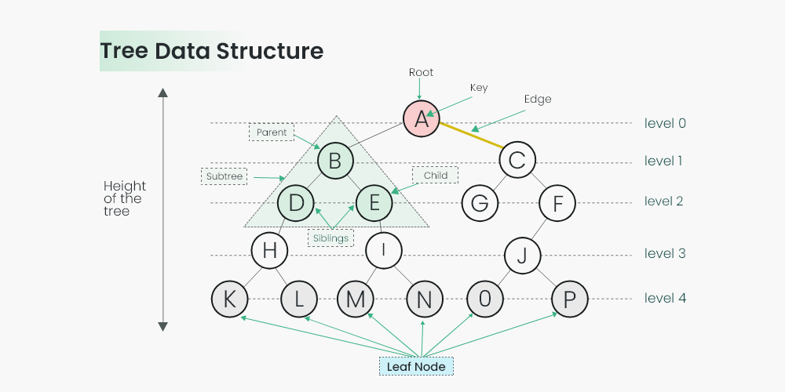

Introduction to Trees
A tree data structure is a hierarchical structure that is used to represent and organize data in a way that is easy to navigate and search. It is a collection of nodes that are connected by edges and has a hierarchical relationship between the nodes. The topmost node of the tree is called the root, and the nodes below it are called the child nodes. Each node can have multiple child nodes, and these child nodes can also have their own child nodes, forming a recursive structure.A tree is a hierarchical data structure that consists of nodes connected by edges. Each node contains a value and may also have a link to one or more child nodes.
Types of Trees
Binary Tree
A binary tree is a hierarchical data structure in which each node has at most two children, referred to as the left child and the right child.
Here are some key points about binary trees:
- Node Structure: Each node contains some data and pointers or references to its left child and right child nodes, or null if the child does not exist.
- Root Node: The topmost node of the tree is called the root node.
- Parent, Child, and Siblings: Each node (except the root) has exactly one parent node and may have zero, one, or two child nodes.
- Depth and Height: The depth of a node is the number of edges from the root node to that node. The height of a tree is the maximum depth of any node in the tree.
- Types of Binary Trees:
- Full Binary Tree: A binary tree in which every node other than the leaves has two children.
- Complete Binary Tree: A binary tree in which every level, except possibly the last, is completely filled, and all nodes are as far left as possible.
- Perfect Binary Tree: A binary tree in which all interior nodes have two children, and all leaves have the same depth or same level.
- Balanced Binary Tree: A binary tree in which the depth of the left and right subtrees of every node differ by at most one.
- Traversals: Binary trees can be traversed in different orders:
- Inorder: Visit the left subtree, then the root, then the right subtree.
- Preorder: Visit the root, then the left subtree, then the right subtree.
- Postorder: Visit the left subtree, then the right subtree, then the root.

Binary Search Tree (BST)
A binary search tree is a binary tree in which the value of each node's left child is less than the value of the node, and the value of each node's right child is greater than the value of the node.
Key Characteristics:
- Ordered Structure: Maintains a specific order of elements where the left subtree contains elements less than the root, and the right subtree contains elements greater than the root.
- Efficient Search: Provides efficient searching capabilities with a time complexity of O(log n) for average case scenarios.
- Dynamic Operations: Supports dynamic operations like insertion, deletion, and search, making it suitable for various applications.
- Applications: Widely used in applications requiring fast search operations, such as in database indexing, symbol tables, and autocomplete functionalities.
AVL Tree
An AVL tree is a self-balancing binary search tree in which the heights of the two child subtrees of any node differ by at most one.
Key Characteristics:
- Self-Balancing: Automatically maintains balance after insertion and deletion operations to ensure logarithmic time complexity for search, insertion, and deletion.
- Rotations: Utilizes rotations (single and double) to balance the tree when necessary.
- Efficient Operations: Maintains height balance to keep the depth of the tree minimal, leading to efficient operations.
- Applications: Used in applications requiring faster search, insertion, and deletion than ordinary binary search trees, such as in database systems and language compilers.
Algorithm:
The AVL tree performs rotations to maintain its balance during insertion and deletion. The two main types of rotations are:
- Single Rotation: Performs a single rotation (left or right) to balance the tree.
- Double Rotation: Performs two rotations (left-right or right-left) to balance the tree.
Complexity Analysis:
AVL trees guarantee logarithmic time complexity for basic operations such as search, insertion, and deletion, making them efficient for use in various applications.
Operations on Trees
- Insertion: Adding a new node to the tree.
- Deletion: Removing a node from the tree.
- Traversal: Visiting all nodes in a specific order.
- Search: Finding a specific node in the tree.
- Height Calculation: Determining the height of the tree.
Applications of Trees
- Binary Search Trees (BSTs): Used for searching, insertion, and deletion operations efficiently.
- Expression Trees: Used to represent mathematical expressions for evaluation.
- Decision Trees: Used in decision analysis and machine learning algorithms.
- Trie: Used for efficient searching of strings and prefix matching.
- Heap: Used for implementing priority queues and heap sort.